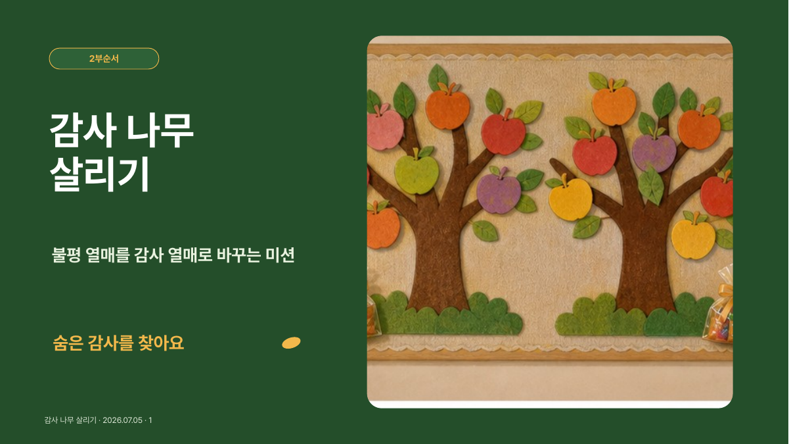
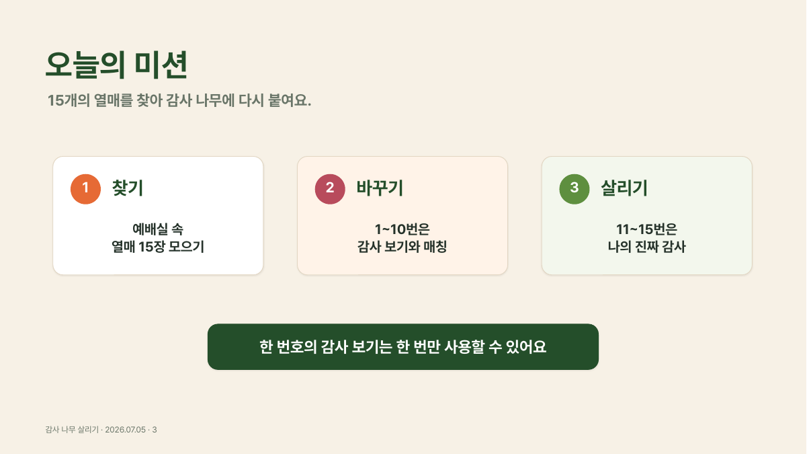
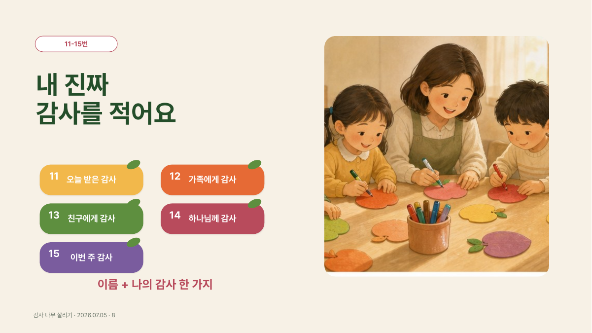

살아 있는 말씀
말씀은 하나님께서 자기 백성에게 음성을 들려주시고 삶 가운데 베푸신 은혜를 깨닫게 하시는 살아 있는 말씀이라고 믿습니다.
개인 신앙 이야기
대학 시절 네비게이토 선교회에서 말씀을 배우고 신앙생활을 이어오신 부모님 아래에서 자랐습니다. 두 분이 말씀을 암송하고 매일 아침 경건의 시간을 갖는 모습을 보며, 하나님과 말씀은 제게 자연스러운 일상의 일부가 되었습니다.
고등학교 시절에는 SFC를 통해 성경을 배우며 신앙생활에 스스로 관심을 갖기 시작했습니다. 가정에서 익숙하게 접했던 신앙이 말씀 앞에서 질문하고 응답하는 제 자신의 믿음으로 자라기 시작한 때였습니다.
처음 사역을 시작하게 한 것도 말씀 가운데 깨닫게 하신 하나님의 사랑의 기쁨이었습니다. 그래서 다음세대가 교회 문화에 익숙해지는 데 머물지 않고, 말씀을 통해 하나님을 인격적으로 알아가며 자신의 감정과 관계, 학업과 진로를 하나님 앞에서 바라보도록 함께하고자 합니다.
목회철학
듣는 사람의 눈높이에서 시작하되 말씀의 본질은 가볍게 만들지 않고, 예배에서 나온 한마디를 다음 주의 기도와 대화까지 이어가는 일을 중요하게 여깁니다.
말씀은 하나님께서 자기 백성에게 음성을 들려주시고 삶 가운데 베푸신 은혜를 깨닫게 하시는 살아 있는 말씀이라고 믿습니다.
아동에게는 이미지와 움직임을, 청소년에게는 학업과 관계의 언어를 사용하되 마지막에는 말씀을 분명히 붙잡도록 이끕니다.
설교와 2부 활동, 교사와의 대화, 새친구 정착이 따로 움직이지 않고 다음 만남까지 이어지도록 설계합니다.
반복 업무를 정확한 흐름으로 정리하여 목회자와 교사가 기도하고 사람을 기억할 시간과 마음을 지키고자 합니다.
사역 경력
아래 기간과 수치는 현재 보유한 설교 원고와 예배 자료에서 확인되는 범위입니다. 실제 재직 기간과 역할은 공식 이력서에서 별도로 확인합니다.
사역 포트폴리오
결과물의 디자인만 보여주지 않고, 말씀의 주제와 기획 의도, 직접 제작한 자료, 현장 진행과 그 과정에서 배운 점을 함께 소개합니다.



아동부 2부 활동 · PPT · A3 결과물
불평의 언어를 멈추고 이미 받은 은혜와 일상의 감사를 찾도록, 몸을 움직이는 탐색과 짧은 문장 쓰기를 한 흐름으로 구성했습니다.
청소년부 2부 활동 · 인쇄 디자인 · 진행용 PPT
내가 만들어 낸 행복과 이미 내게 주어진 행복을 카드 선택과 주사위 보드게임으로 직접 비교하도록 구성했습니다. 선택의 이유가 예배 후 대화의 접점이 되도록 질문을 남겼습니다.


청소년부 2부 활동 · 활동지 · 예배 후 대화
전체 앞에서 말하기 어려운 학생도 활동지와 선택형 질문, 짧은 나눔을 통해 자기 생각을 표현하도록 구성했습니다. 표현한 내용은 원하는 범위에서만 나누고 예배 후 대화로 이었습니다.
기억하고 이어가는 돌봄
돌봄은 한 번의 긴 대화보다, 아이가 한 말과 관심사를 기억하고 다음 주에 다시 묻는 과정이라고 생각합니다. 필요한 내용은 교사와 나누고 작은 역할과 기도로 연결합니다.
공개용 가상 샘플
실제 아이의 이름·학교·보호자·연락처·민감한 기록은 공개하지 않습니다.
첫 방문 가정을 위한 안내 화면
방문 전에 예배 흐름과 첫날의 과정을 이해하도록 실제 소개 페이지를 비식별 샘플로 다시 구성했습니다.
사역에서 확인한 변화와 배운 점
출석 숫자만으로는 다음세대 사역의 변화를 충분히 말하기 어렵습니다. 대신 학생이 자기 방식으로 참여하고, 한마디가 대화와 기도로 이어지고, 부족했던 진행을 다음 주에 고친 장면을 기록했습니다.
공개 발표뿐 아니라 익명 응답, 활동지, 팀 미션, PPT 보조처럼 각자가 들어올 수 있는 여러 통로를 마련했습니다.
학업과 관계, 입시와 진로에 관한 표현이 활동에서 나왔고, 예배 후 짧은 대화와 기도 제목으로 이어졌습니다.
활동에서 나온 한마디를 기록하고 다음 주에 다시 안부를 묻고 작은 역할로 연결하는 일을 중요하게 여겼습니다.
규칙을 줄이고, 마지막에 붙잡을 말씀을 먼저 정하고, 교사와 역할을 미리 나누는 방식으로 매주 보완했습니다.
프로그램을 잘 마쳤다는 사실보다, 활동에서 나온 한마디를 다음 주까지 기억하고 다시 묻는 일이 더 중요했습니다.
설교 · 예배 · 찬양인도
앞으로의 목회
앞으로도 말씀과 다음세대, 예배와 돌봄, 이를 뒷받침하는 운영의 흐름을 함께 세워가고자 합니다. 목회자와 교사가 행정에 소모되기보다 기도하고 사람을 기억할 수 있도록 정리하며, 아이들과 청소년들이 말씀을 자기 삶에서 붙잡는 순간을 더 깊이 살피겠습니다.